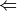
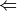
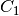

Database¶
Code author: Lori A. Burns
Section author: Lori A. Burns
- database(name, db_name[, func, mode, cp, rlxd, symm, zpe, benchmark, tabulate, subset])[source]¶
Function to access the molecule objects and reference energies of popular chemical databases.
Aliases : db() Returns: (float) Mean absolute deviation of the database in kcal/mol Psi variables: - db_name DATABASE MEAN SIGNED DEVIATION
- db_name DATABASE MEAN ABSOLUTE DEVIATION
- db_name DATABASE ROOT-MEAN-SQUARE DEVIATION
- Python dictionaries of results accessible as DB_RGT and DB_RXN.
Note
It is very easy to make a database from a collection of xyz files using the script psi4/lib/scripts/ixyz2database.pl. See Creating a Database for details.
Caution
Some features are not yet implemented. Buy a developer some coffee.
- In sow/reap mode, use only global options (e.g., the local option set by set scf scf_type df will not be respected).
Note
To access a database that is not embedded in a PSI4 distribution, add the path to the directory containing the database to the environment variable PYTHONPATH.
Parameters: - name (string) –
'scf' || 'sapt0' || 'ccsd(t)' || etc.
First argument, usually unlabeled. Indicates the computational method to be applied to the database. May be any valid argument to energy().
- db_name (string) –
'BASIC' || 'S22' || 'HTBH' || etc.
Second argument, usually unlabeled. Indicates the requested database name, matching (case insensitive) the name of a python file in psi4/lib/databases or PYTHONPATH. Consult that directory for available databases and literature citations.
- func (function) –
 energy  || optimize || cbs
energy  || optimize || cbsIndicates the type of calculation to be performed on each database member. The default performs a single-point energy('name'), while optimize perfoms a geometry optimization on each reagent, and cbs performs a compound single-point energy. If a nested series of python functions is intended (see Function Intercalls), use keyword db_func instead of func.
- mode (string) – 'continuous' || 'sow' || 'reap'
Indicates whether the calculations required to complete the database are to be run in one file ('continuous') or are to be farmed out in an embarrassingly parallel fashion ('sow'/'reap'). For the latter, run an initial job with 'sow' and follow instructions in its output file.
- cp (boolean) –
'on' ||
'off' Indicates whether counterpoise correction is employed in computing interaction energies. Use this option and NOT the cp() function for BSSE correction in database(). Option available (See Available Databases) only for databases of bimolecular complexes.
- rlxd (boolean) –
'on' ||
'off' Indicates whether correction for deformation energy is employed in computing interaction energies. Option available (See Available Databases) only for databases of bimolecular complexes with non-frozen monomers, e.g., HBC6.
- symm (boolean) – 'on' || 'off'
Indicates whether the native symmetry of the database reagents is employed ('on') or whether it is forced to  symmetry ('off'). Some computational methods (e.g., SAPT) require no symmetry, and this will be set by database().
- zpe (boolean) –
'on' ||
'off' Indicates whether zero-point-energy corrections are appended to single-point energy values. Option valid only for certain thermochemical databases. Disabled until Hessians ready.
- benchmark (string) – 'default' || 'S22A' || etc.
Indicates whether a non-default set of reference energies, if available (See Available Databases), are employed for the calculation of error statistics.
- tabulate (array of strings) – [] || ['scf total energy', 'natom'] || etc.
Indicates whether to form tables of variables other than the primary requested energy. Available for any PSI variable.
- subset (string or array of strings) –
Indicates a subset of the full database to run. This is a very flexible option and can be used in three distinct ways, outlined below. Note that two take a string and the last takes an array. See Available Databases for available values.
- 'small' || 'large' || 'equilibrium'
- Calls predefined subsets of the requested database, either 'small', a few of the smallest database members, 'large', the largest of the database members, or 'equilibrium', the equilibrium geometries for a database composed of dissociation curves.
- 'BzBz_S' || 'FaOOFaON' || 'ArNe' || 'HB' || etc.
- For databases composed of dissociation curves, or otherwise divided into subsets, individual curves and subsets can be called by name. Consult the database python files for available molecular systems (case insensitive).
- [1,2,5] || ['1','2','5'] || ['BzMe-3.5', 'MeMe-5.0'] || etc.
- Specify a list of database members to run. Consult the database python files for available molecular systems. This is the only portion of database input that is case sensitive; choices for this keyword must match the database python file.
Examples : >>> # [1] Two-stage SCF calculation on short, equilibrium, and long helium dimer >>> db('scf','RGC10',cast_up='sto-3g',subset=['HeHe-0.85','HeHe-1.0','HeHe-1.5'], tabulate=['scf total energy','natom'])
>>> # [2] Counterpoise-corrected interaction energies for three complexes in S22 >>> # Error statistics computed wrt an old benchmark, S22A >>> database('df-mp2','S22',cp=1,subset=[16,17,8],benchmark='S22A')
>>> # [3] SAPT0 on the neon dimer dissociation curve >>> db('sapt0',subset='NeNe',cp=0,symm=0,db_name='RGC10')
>>> # [4] Optimize system 1 in database S22, producing tables of scf and mp2 energy >>> db('mp2','S22',db_func=optimize,subset=[1], tabulate=['mp2 total energy','current energy'])
>>> # [5] CCSD on the smallest systems of HTBH, a hydrogen-transfer database >>> database('ccsd','HTBH',subset='small', tabulate=['ccsd total energy', 'mp2 total energy'])
Output¶
At the beginning of a database job is printed a listing of the individual system calculations which will be performed. The output snippet below is from the example job [1] above. It shows each reagent required for the subset of database reactions requested. Note that this is an un-counterpoise-corrected example, and the wrapper is smart enough to compute only once the monomer whose energy will be subtracted from each of the three dimers.
RGC1-HeHe-0.85-dimer
RGC1-He-mono-unCP
RGC1-HeHe-1.0-dimer
RGC1-HeHe-1.5-dimer
At the end of the job, the Requested Energy table is printed that gives the total energies for the requested model chemistry for each reagent and each reaction, as well as the stoichoimetric weights by which the reagent energies are transfromed into the reaction energy. In this case, the dimer is +1 and the monomer is -2, indicating the the interaction energy is computed from dimer less first monomer less second (identical) monomer. Error statistics are computed with respect to the reference energies stored in the database. One of these, the mean absolute deviation, is returned by the wrapper as an ordinary Python variable. (For databases without a stored reference energy, e.g., BASIC, large and meaningless numbers are printed for error.) The other two tables tabulate the PSI variables requested through keyword tabulate, in this case the total SCF energy and the number of atoms in each reagent.
==> Scf Total Energy <==
-----------------------------------------------------------------------------------
Reaction Reaction Value Reagent 1 Reagent 2
Value Wt Value Wt
-----------------------------------------------------------------------------------
RGC1-HeHe-0.85 0.00011520 -5.71020576 1 -2.85516048 -2
RGC1-HeHe-1.0 0.00000153 -5.71031943 1 -2.85516048 -2
RGC1-HeHe-1.5 -0.00000000 -5.71032096 1 -2.85516048 -2
-----------------------------------------------------------------------------------
==> Natom <==
-----------------------------------------------------------------------------------
Reaction Reaction Value Reagent 1 Reagent 2
Value Wt Value Wt
-----------------------------------------------------------------------------------
RGC1-HeHe-0.85 0.00000000 2.00000000 1 1.00000000 -2
RGC1-HeHe-1.0 0.00000000 2.00000000 1 1.00000000 -2
RGC1-HeHe-1.5 0.00000000 2.00000000 1 1.00000000 -2
-----------------------------------------------------------------------------------
==> Requested Energy <==
-----------------------------------------------------------------------------------
Reaction Reaction Energy Error Reagent 1 Reagent 2
Ref Calc [kcal/mol] [H] Wt [H] Wt
-----------------------------------------------------------------------------------
RGC1-HeHe-0.85 0.0376 0.0723 0.0347 -5.71020576 1 -2.85516048 -2
RGC1-HeHe-1.0 -0.0219 0.0010 0.0228 -5.71031943 1 -2.85516048 -2
RGC1-HeHe-1.5 -0.0029 -0.0000 0.0029 -5.71032096 1 -2.85516048 -2
-----------------------------------------------------------------------------------
Minimal Dev 0.0029
Maximal Dev 0.0347
Mean Signed Dev 0.0201
Mean Absolute Dev 0.0201
RMS Dev 0.0240
-----------------------------------------------------------------------------------
As well as being printed in the output file, database results from the tabulate option are available in the input file as ordinary Python dictionaries DB_RGT and DB_RXN, indexed firstly by reagent or reaction name and secondly by the requested PSI variable name. See the first paragraph of Creating a Database for the distinction between reagents and reactions. For example, an input file like the following requests a couple variables through tabulate and then makes use of the resulting data structures, here, only to print.
set basis 6-31g*
db('dfmp2','s22',subset='small',tabulate=['CURRENT ENERGY','DF-MP2 CORRELATION ENERGY'])
from pprint import pprint
print_stdout('\nDB_RGT')
pprint(DB_RGT)
print_stdout('\nDB_RXN')
pprint(DB_RXN)
print_stdout('\ndf-mp2 interaction energy of water dimer (S22-2)')
print_stdout(DB_RXN['S22-2']['CURRENT ENERGY'])
The output to the screen is as follows.
DB_RGT
{'S22-16-dimer': {'CURRENT ENERGY': -155.37373581838636,
'DF-MP2 CORRELATION ENERGY': -0.523870772178089},
'S22-16-monoA-unCP': {'CURRENT ENERGY': -78.29412053242164,
'DF-MP2 CORRELATION ENERGY': -0.2629759351596186},
'S22-16-monoB-unCP': {'CURRENT ENERGY': -77.07606823017188,
'DF-MP2 CORRELATION ENERGY': -0.2594122526144091},
'S22-2-dimer': {'CURRENT ENERGY': -152.40958884746667,
'DF-MP2 CORRELATION ENERGY': -0.3797598812113561},
'S22-2-monoA-unCP': {'CURRENT ENERGY': -76.19905879745446,
'DF-MP2 CORRELATION ENERGY': -0.1887118848315123},
'S22-2-monoB-unCP': {'CURRENT ENERGY': -76.19902978067739,
'DF-MP2 CORRELATION ENERGY': -0.18857384937354635},
'S22-8-dimer': {'CURRENT ENERGY': -80.67416758080654,
'DF-MP2 CORRELATION ENERGY': -0.2844102558783027},
'S22-8-monoA-unCP': {'CURRENT ENERGY': -40.336952636980364,
'DF-MP2 CORRELATION ENERGY': -0.14185962536715307},
'S22-8-monoB-unCP': {'CURRENT ENERGY': -40.336952636980506,
'DF-MP2 CORRELATION ENERGY': -0.14185962536715097}}
DB_RXN
{'S22-16': {'CURRENT ENERGY': -0.0035470557928363178,
'DF-MP2 CORRELATION ENERGY': -0.0014825844040612934},
'S22-2': {'CURRENT ENERGY': -0.011500269334817403,
'DF-MP2 CORRELATION ENERGY': -0.0024741470062974724},
'S22-8': {'CURRENT ENERGY': -0.0002623068456699684,
'DF-MP2 CORRELATION ENERGY': -0.0006910051439986686}}
df-mp2 interaction energy of water dimer (S22-2)
-0.0115002693348
Available Databases¶
Below are documented for particular databases the availibility of the generic database function options cp, rlxd, benchmark, and the string options for subset. The full reagent member list, which can also be used in conjunction with subset, is not included here for consideration of space and may be found in the database file. The database Python files are very readable and should be consulted for more particular questions.
BAKERJCC96¶
- cp 'off'
- rlxd 'off'
ACENES¶
- cp 'off' || 'on'
- rlxd 'off'
- subset
- 'small'
- 'large'
- 'FIRST3' benzene, napthalene, and anthracene dimers
- 'FIRST5' benzene - pentacene dimers
- 'FIRST10' benzene - decacene dimers
NBC10¶
- cp 'off' || 'on'
- rlxd 'off'
- benchmark
- 'NBC100' Burns et al. JCP 134 084107 (2011).
- 'NBC10A' Marshall et al. JCP 135 194102 (2011).
- subset
- 'small'
- 'large'
- 'equilibrium'
- 'BzBz_S' dissociation curve for benzene dimer, sandwich
- 'BzBz_T' dissociation curve for benzene dimer, t-shaped
- 'BzBz_PD34' dissociation curve for benzene dimer, parallel displaced by 3.4A
- 'BzH2S' dissociation curve for benzene-H2S
- 'BzMe' dissociation curve for benzene-methane
- 'MeMe' dissociation curve for methane dimer
- 'PyPy_S2' dissociation curve for pyridine dimer, sandwich
- 'PyPy_T3' dissociation curve for pyridine dimer, t-shaped
- 'BzBz_PD32' dissociation curve for benzene dimer, parallel displaced by 3.2A
- 'BzBz_PD36' dissociation curve for benzene dimer, parallel displaced by 3.6A
S22by5¶
- cp 'off' || 'on'
- rlxd 'off'
- subset
- 'small'
- 'large'
- 'equilibrium'
- 'mol1' five-point (0.9, 1.0, 1.2, 1.5, 2.0)
 dissociation curve for molecule 1
dissociation curve for molecule 1 - ...
- 'mol22' five-point (0.9, 1.0, 1.2, 1.5, 2.0) dissociation curve for molecule 22
BENCH12¶
- benchmark
- '<benchmark_name>' <Reference>.
- '<default_benchmark_name>' <Reference>.
- subset
- 'small'
- 'large'
- 'alkenes'
- 'alkanes'
- 'acenes'
- 'thiophenes'
- 'h2o_size'
- 'h2o_shape'
- 'atoms'
- 'S22_HB'
- 'S22_MX'
- 'S22_DD'
RSE42¶
- benchmark
- 'RSE42' [E. Soydas and U. Bozkaya, JCTC, 9, 1452-1460 (2013)].
- 'RSE42' [E. Soydas and U. Bozkaya, JCTC, 9, 1452-1460 (2013)].
- subset
- 'small' <members_description>
- 'large' <members_description>
- 'RSE30' smaller systems in RSE42
- '<subset>' <members_description>
BAKERJCC93¶
- cp 'off'
- rlxd 'off'
- subset
- 'small'
- 'large'
RGC10¶
- cp 'off' || 'on'
- rlxd 'off'
- subset
- 'small'
- 'large'
- 'equilibrium'
- 'HeHe' 18-point dissociation curve for helium dimer
- 'HeNe' 18-point dissociation curve for helium-neon complex
- 'HeAr' 18-point dissociation curve for helium-argon complex
- 'HeKr' 18-point dissociation curve for helium-krypton complex
- 'NeNe' 18-point dissociation curve for neon dimer
- 'NeAr' 18-point dissociation curve for neon-argon complex
- 'NeKr' 18-point dissociation curve for neon-krypton complex
- 'ArAr' 18-point dissociation curve for argon dimer
- 'ArKr' 18-point dissociation curve for argon-krypton complex
- 'KrKr' 18-point dissociation curve for krypton dimer
S66¶
- cp 'off' || 'on'
- rlxd 'off'
- subset
- 'small'
- 'large'
- 'HB' hydrogen-bonded systems
- 'MX' mixed-influence systems
- 'DD' dispersion-dominated systems
BASIC¶
- cp 'off'
- rlxd 'off'
- subset ['h2o', 'nh3', 'ch4']
NHTBH¶
- cp 'off'
- rlxd 'off'
- subset
- 'small'
- 'large'
HBC6¶
- cp 'off' || 'on'
- rlxd 'off' || 'on'
- benchmark
- 'HBC60' Thanthiriwatte et al. JCTC 7 88 (2011).
- 'HBC6A' Marshall et al. JCP 135 194102 (2011).
- 'HBC6ARLX' Sherrill group, unpublished.
- subset
- 'small'
- 'large'
- 'equilibrium' equilibrium points for the six systems
- 'FaOOFaOO' dissociation curve for formic acid dimer
- 'FaONFaON' dissociation curve for formamide dimer
- 'FaNNFaNN' dissociation curve for formamidine dimer
- 'FaOOFaON' dissociation curve for formic acid- formamide complex
- 'FaONFaNN' dissociation curve for formamide- formamidine complex
- 'FaOOFaNN' dissociation curve for formic acid- formamidine complex
HSG¶
- cp 'off' || 'on'
- rlxd 'off'
- benchmark
- 'HSG0' Faver et al. JCTC 7 790 (2011).
- 'HSGA' Marshall et al. JCP 135 194102 (2011).
- subset
- 'small'
- 'large'
JSCH¶
- cp 'off' || 'on'
- rlxd 'off'
- subset
- 'small'
- 'large'
- 'HB' hydrogen-bonded systems (coplanar base-pairs)
- 'MX' interstrand systems (adjacent base-pairs on different strands)
- 'DD' stacked systems (adjacent base-pairs on same strand)
S22¶
- cp 'off' || 'on'
- rlxd 'off'
- benchmark
- 'S220' Jurecka et al. PCCP 8 1985 (2006).
- 'S22A' Takatani et al. JCP 132 144104 (2010).
- 'S22B' Marshall et al. JCP 135 194102 (2011).
- subset
- 'small' water dimer, methane dimer, ethene-ethine
- 'large' adenine-thymine
- 'HB' hydrogen-bonded systems
- 'MX' mixed-influence systems
- 'DD' dispersion-dominated systems
- 'S11' smaller systems in S22
HTBH¶
- cp 'off'
- rlxd 'off'
- subset
- 'small'
- 'large'
NCB31¶
- cp 'off' || 'on'
- rlxd 'off' || 'on'
- benchmark
- '<benchmark_name>' <Reference>.
- '<default_benchmark_name>' <Reference>.
- subset
- 'small'
- 'large'
- 'HB6' hydrogen-bonded
- 'CT7' charge-transfer
- 'DI6'
- 'WI7' weakly interacting
- 'PPS5'